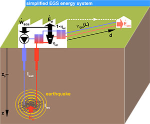
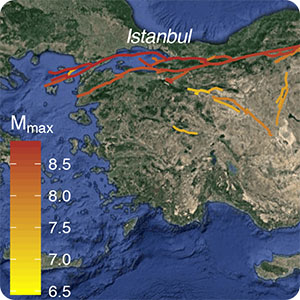

Recent Highlights
-

Mignan et al. (2019), Including seismic risk mitigation measures into the Levelized Cost Of Electricity in enhanced geothermal systems for optimal siting. Applied Energy, 238, 831-850, doi: 10.1016/j.apenergy.2019.01.109
The seismic risk associated with deep fluid injection in Enhanced Geothermal Systems can be mitigated by stopping reservoir stimulation when the seismic risk becomes unacceptable or by reducing production flow rates when seismicity occurs during the operational phase. So far, none of these mitigation measures have been included in the Levelized Cost Of Electricity. A meta-model is introduced that estimates the optimal price of electricity, based on an analytical geothermal energy model, and updates this cost to include the outlay for mandatory seismic risk mitigation measures. The proposed energy model computes both electricity production and heat credit. The costs added during reservoir stimulation are based on the probability of abandoning an injection well, based on a traffic-light system, defined as the ratio of scenarios that exceed a given seismic safety threshold in the risk space. In the production phase, the net energy generated is reduced by clipping the production flow rate so that the reservoir's overpressure does not exceed the regional minimum effective stress. Based on a generic geothermal triplet, we investigate the trade-off between heat credit and seismic risk mitigation cost. The added cost, mostly due to financial risk aversion, shifts the optimal site for a plant from between a few kilometres to tens of kilometres away from populated areas, for increasingly vulnerable building stocks. Finally, using a simple yet realistic optimisation strategy, we study the role that a seismic safety standard plays for determining the number of EGS plants that can be sited in a given region.
-

Woo & Mignan (2018), Counterfactual Analysis of Runaway Earthquakes. Seismological Research Letters, 89 (6), 2266-2273, doi: 10.1785/0220180138
The historical record of earthquakes is a crucial data resource for seismic hazard analysis. In every region, the largest events are rare and difficult to parameterize. In cases for which such events are associated with the ruptures of mapped faults, defining the extent of possible fault ruptures is an important challenge that is often guided by historical precedent in which geologic, particularly paleoseismic, studies are limited. Counterfactual risk analysis recognizes that a historical event is just one realization of many possible alternatives: a fault rupture that happened in the past is just one of numerous ways in which seismic energy might have been dynamically released. Stochastic modeling of past earthquakes can provide additional insight into the complex geometry of multifault rupture. This counterfactual approach that is advocated here extends the effective time window of observation of the fault rupture process, well beyond the time span of earthquake catalogs. The basic concepts of counterfactual risk analysis are explained, followed by a seismological discussion of runaway earthquakes, illustrated in the case of the North Anatolian fault (NAF) in Turkey. This notable example demonstrates the practical utility of the counterfactual approach as a new supplementary tool for addressing one of the most difficult problems in probabilistic seismic hazard and risk assessment: selecting the multifault combinations to model as explicit seismic sources.
-
Mignan et al. (2017), Induced seismicity closed-form traffic light system for actuarial decision-making during deep fluid injections. Scientific Reports, 7, 13607, doi: 10.1038/s41598-017-13585-9
The rise in the frequency of anthropogenic earthquakes due to deep fluid injections is posing serious economic, societal, and legal challenges to many geo-energy and waste-disposal projects. Existing tools to assess such problems are still inherently heuristic and mostly based on expert elicitation (so-called clinical judgment). We propose, as a complementary approach, an adaptive traffic light system (ATLS) that is function of a statistical model of induced seismicity. It offers an actuarial judgement of the risk, which is based on a mapping between earthquake magnitude and risk. Using data from six underground reservoir stimulation experiments, mostly from Enhanced Geothermal Systems, we illustrate how such a data-driven adaptive forecasting system could guarantee a risk-based safety target. The proposed model, which includes a linear relationship between seismicity rate and flow rate, as well as a normal diffusion process for post-injection, is first confirmed to be representative of the data. Being integrable, the model yields a closed-form ATLS solution that is both transparent and robust. Although simulations verify that the safety target is consistently ensured when the ATLS is applied, the model from which simulations are generated is validated on a limited dataset, hence still requiring further tests in additional fluid injection environments.